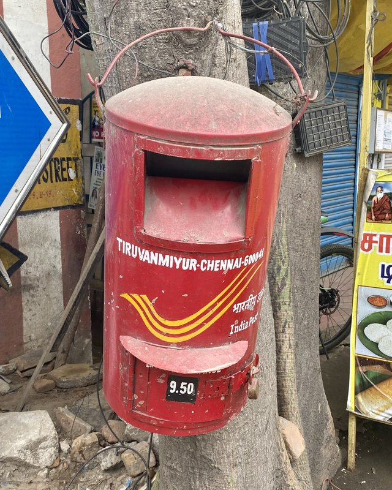

Writing and media
Columns, blog posts, podcasts, and interviews for readers outside academia. For media inquiries, email sanukriti@worldbank.org.

Recent
What's up with gender norms?
Development Impact, May 2026
Electing women improves healthcare for female constituents, but can trigger a domestic violence backlash
VoxDev, April 2026
Peer support boosts reproductive agency where vouchers fall short
VoxDev, April 2026
From marriage penalties to child penalties: how development reshapes women's work
Development Impact, April 2026
AI chatbots
Development Impact, October 2025
How should we measure household wealth in our surveys?
Development Impact, July 2025
On gender, family, and work
Male-dominated editorial boards, parts 1 and 2
Development Impact, 2024
Family, parts 1 and 2
Development Impact, 2024
Childcare regulation and women's participation in the labor force
Development Impact, June 2023
Bring a friend: Leveraging financial and peer support to improve women's reproductive agency
Ideas for India, August 2023
Delving into women's isolation
World Bank feature story, March 2022
Son preference: Why we should care about it
Let's Talk Development, October 2021
Evolution of dowry in rural India: Evidence from 1960-2008
Let's Talk Development, June 2021
How mothers-in-law influence women's social networks and reproductive health
Ideas for India, August 2020
How female foeticide has influenced fertility and parental investments in girls
VoxDev, September 2017
On research methods
How to collect data on social networks
Development Impact, May 2024
Notes from the field: From Lusaka to the Copperbelt
Development Impact, September 2023
(How) should I stratify when randomizing at the group level?
Development Impact, February 2023
Podcasts and interviews
Competence vs gender
VoxEU Talk, July 2024
The curse of the Mummy-ji
Rocking Our Priors podcast with Alice Evans, August 2022
Behind the Scenes of Econ Research
Women in Economics and Policy podcast, June 2022
Meet the economist who did a research on saas-bahu relationships
She The People, April 2020
Research in the news
Work on mothers-in-law, dowry, childcare laws, and fertility policy has been covered by The Economist, BBC, CNN, The Hindu, Mint, The Print, Scroll.in, IndiaSpend, and Harvard Magazine. Links to coverage sit with each paper on the Research page.